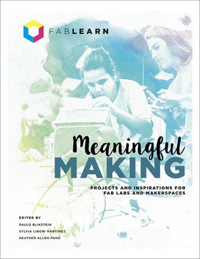

Thoughts on MakerEd
In the UTeach program, we are often encouraged to educate students through the use of inquiry, a hands-on based learning strategy that allows students to discover answers through their own investigations, with teacher intervention kept at a minimum. Inquiry itself is based off of constructivism, which, in short, allows students to encounter their own mistakes during the learning process to eventually grow from them. Even today, there is push back against inquiry as it upheaves the idea of a traditional classroom, where lectures and note-taking dominate, but the UTeach program and its students work to improve education by abandoning these conventional notions of what a classroom is. I feel that making is similar to inquiry, and that they often feed off of each other, especially in the classroom. Just as there is pushback to inquiry in the classroom, there is pushback to making, and this pushback will likely only grow in the coming years as maker education becomes more prevalent. STEM subjects will likely see a lot of hesitation too, as there is a common belief that science has little room for creative efforts. However, like inquiry, there are benefits to allow students to create and participate in hands-on activities that can enhance their learning process.
Most of my outlooks on maker education were developed before any formal introduction to the maker movement, but since being exposed to maker events, lectures, and materials, my interest in using making in education has only grown. As part of UTeach maker, our group held a book club in which we read the excellent book titled "Meaningful Making," a book written as part of a maker experience write-up with the FabLearn center at Stanford University. This book really enhanced my understanding of not only how making can be used in the classroom, but also the logistics of dealing with outside factors, such as socioeconomic status, administrative pressures, and student interests. There are so many examples of student-driven projects in so many different subject areas that really showcase that creativity and ingenuity can coexist perfectly with rigid subjects like math, science, and computer programming. In my future classroom, I hope to use some of the projects described in this book, among others that are based on what I learned from reading it.
As I move into student teaching, I hope to implement maker lessons in order to see how they affect my growth as a teacher. From these experiences, I hope to see how my outlook on maker education changes, and from that change, more updates will appear on this portion of the website.
My MakerEd Experiences: Net Building and By-Catch
My experience in the UTeach program has luckily allowed me to see some of the important aspects of maker education in action in classrooms I have taught. In Classroom Interactions, a course in the UTeach program with a major field component, I taught three lessons to an aquatic science class of juniors and seniors in high school. One of the lessons focused on by-catch, a phenomenon where fishing nets catch species other than intended, such as catching a dolphin when aiming for tuna. In this lesson, I implemented a significant making component: each group of students was tasked with designing and building a net made from household supplies, such as pipecleaners, paper clips, plastic bags, and more. Students were given a budget of $10000, with each supply varying in price. The nets were then used to catch "fish", which were represented by various types of beans and marbles. The goal of this lesson was to show the students the economic ramifications of better fishing nets, while also demonstrating the difficulty associated with building a net that catches only one species of fish.
This teaching experience was especially interesting to me because of the level of engagement among the students. Having taught this particular group of students before this lesson, as well as having observed them, they can often be disinterested in the subject matter and somewhat distracted. Using making in the form of building these nets really resonated with the students; I could see them trying to work to make their net better with each iteration and they truly seemed to enjoy it. In addition to having fun with it, the students left the classroom with what appeared to be a working knowledge of by-catch. The students understood the problem with creating the perfect net in a real-world application, while also seeing the environmental ramifications of catching species other than what was intended. This is just one small example of how having a maker-centered lesson can help expose students to the subject matter while also allowing them to have fun and use hands-on learning to work towards goals and collaborate with peers.
A Chemical Rube Goldberg: Making and PBI
 In addition to my lesson on nets and by-catch, I had the unique opportunity of merging making with project based instruction in the final course of the UTeach sequence before apprentice teaching, which is also called project based instruction. In this course, I went about teaching chemical reactions, stoichiometry, and balancing reactions through a mix of PBI and making by having the students use a set of four reactions to create a Rube Goldberg based on the physical reactions driven by the chemical reactions. In addition to learning about chemical reactions while building the Rube Goldberg, the students were also exposed to ideas of chemical plants and reaction-driven processes, which is essentially what the Rube Goldberg is. To read more about the specifics of this lesson, you can click the picture of the rube goldberg to the left! There are also details for the Arduino I programmed myself to create a temperature sensitive motor for use with one of the reactions.
In addition to my lesson on nets and by-catch, I had the unique opportunity of merging making with project based instruction in the final course of the UTeach sequence before apprentice teaching, which is also called project based instruction. In this course, I went about teaching chemical reactions, stoichiometry, and balancing reactions through a mix of PBI and making by having the students use a set of four reactions to create a Rube Goldberg based on the physical reactions driven by the chemical reactions. In addition to learning about chemical reactions while building the Rube Goldberg, the students were also exposed to ideas of chemical plants and reaction-driven processes, which is essentially what the Rube Goldberg is. To read more about the specifics of this lesson, you can click the picture of the rube goldberg to the left! There are also details for the Arduino I programmed myself to create a temperature sensitive motor for use with one of the reactions.
This lesson really captured the essence of what I feel making in the classroom is. The students were really interested in meeting the challenge of using the chemical reactions to build a Rube Goldberg to accomplish a specific task. The most interesting part of the lesson was the open-endedness that allowed the students to branch out and take risks. The only thing the students were instructed to do was use the reactions; they weren't told how they could do it or what final task the rube goldberg was supposed to accomplish. They came up with all of it themselves! The students took ownership of their ideas and you could see the excitement as they tried to make their parts of the Rube Goldberg work. The creativity some of the students used to put it together really showed the benefit of making in the sciences: it allows students to exercise that creativity while learning what seems like a very non-creative field of study.
In addition to the creativity, I really enjoyed seeing this lesson play out because of the interdisciplinary nature of the project. The students not only used chemistry to see how much of their reactant they needed to use to get their machine moving, but it also branched off into engineering challenges and physics. I heard students trying to calculate the exact force they would need to exert to have a lever turn (citing equations like F = ma), while students on the opposite side of the room were trying to find the optimal angle to turn two meter sticks into a ramp for a ball bearing. The use of making really turned this lesson into a simple lecture or activity on chemical reactions into an interesting way to exercise students' understandings of many different topics other than those that were explicitly the focus of the lesson.